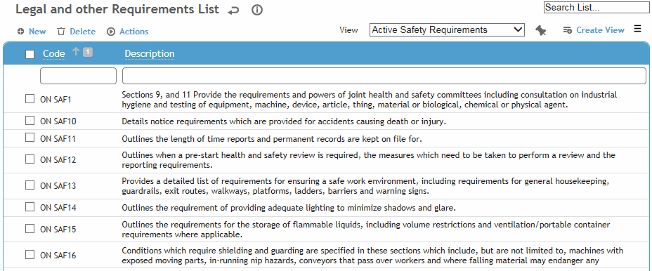
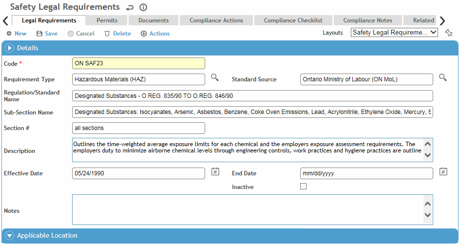

In the Safety menu, click Legal and Other Requirements,
or
in the Environmental menu, click Regulations,
then use the provided fields and views to filter the list.

Safety views will only show requirements entered via the Safety Cloud, and Environmental views will only show requirements entered via the Environmental Cloud. However, both offer an “All Requirements” view.
Click a link to edit a record, or click New.

On the Legal Requirements tab:
Enter a code for the requirement.
Provide the name of the regulation and applicable sub-section and section #, along with a brief description of the regulation. A longer description or additional information may be captured in the Notes field.
Select the Requirement Type and Standard Source.
Enter the date the requirement took effect. Leave the End Date blank unless the requirement has a specific lifespan.
While there is a section for Applicable Location on this tab, you should instead use the Applicable Locations tab to record the location(s) that the requirement applies to. That tab also allows you to create compliance actions for selected locations. Any location information entered on the Legal Requirements tab does not transfer to the Application Locations tab, and you will not be able to create a compliance action for this requirement.
The Permits tab displays all permits associated with this legal requirement, either entered directly on this tab or via the Permits menu item. See Recording Permits.
Use the Documents tab to link an external file to a record. Linking a file to a record offers users easy access to the file (for more information, see Linking or Importing a Document).
The Compliance Actions tab displays all findings and actions recommended (or required) related to this requirement as well as those indirectly linked, e.g. a finding generated from an audit related to a regulation. To view an action’s attachment, open the finding and choose Actions»Open Document.
You can edit multiple actions inline on the list view without opening each action record: select the records and click Edit.
To view all actions related to all legal requirements, click Compliance Calendar in the Safety menu or Compliance Obligations in the Environmental menu.
New findings are created on the Applicable Locations tab: select the location(s) and choose Actions»Create New Compliance Action. An action is created for each selected location and will be listed on the Compliance Actions tab. These must be edited to complete required fields such as assignment, due date, etc. For information about recording a finding and its actions, see Recording a New Finding.
It is possible, via custom layouts, to associate a corrective plan with a requirement and have its related actions automatically added and assigned to a group. See Linking a Corrective Plan’s Actions to a Requirement below.
The Compliance Checklist tab allows you to associate questionnaires with a record. For information about creating and administering questionnaires, see Questionnaires.
The Related Inspections tab lists any inspection programs that have been associated with this legal requirement. For more information, see Creating an Inspection or Survey Program.
The Metrics tab allows you to associate custom metrics with this legal requirement. Click a link to view the custom metric record. This list can be exported to Excel.
The Compliance Notes tab allows you to record additional information that does not fit elsewhere in the form. For more information, see Adding Notes to a Form.
The Applicable Locations tab allows you to associate the requirement with one or more locations and also to create compliance actions for one or more of those locations. Actions are listed on the Compliance Actions tab.
While records on other tabs (e.g. permits, documents, notes, etc.) include a GDDLOFB section, such location information is not connected with the Applicable Locations tab.
Setup:
Create a corrective action plan (in the CorrectivePlan look-up table) with the appropriate actions, and assign them to a group (from the GroupandTeam look-up table).
Add the Corrective Plan field to a custom legal requirement layout.
Creating the Actions:
When you link a corrective action plan (that is assigned to a group) to a Safety Legal Requirement (or Environmental Regulation) record, the Compliance Actions tab will automatically populate with the compliance actions that match the record's GDDLOFB. The applicable actions will be assigned to the group or team members whose location matches the GDDLOFB on the requirement. If a compliance action is recurrent, a series of actions will be created for it and assigned to the group or team members (up to the end date of their membership).
Changing the Actions:
If you add a location on the Applicable Locations tab of the requirement record, the Compliance Actions tab will automatically be updated with any actions that match the additional location.
Conversely, if you modify a corrective plan action (in the CorrectivePlan look-up table), the changes will be applied to the linked requirement record. If you want to make changes to all incomplete tasks as of a specific date, in the look-up table you must:
Change the Effective Date as appropriate.
Clear the Is Recurrent checkbox.
Save the corrective plan record.
Set new Is Recurrent parameters. When you save again, the incomplete tasks in the linked requirement record are deleted, and new tasks are added.
Removing the Link to the Corrective Plan:
If you remove the corrective action plan from a requirement record, any associated actions will remain on the Compliance Actions tab and must be deleted manually.